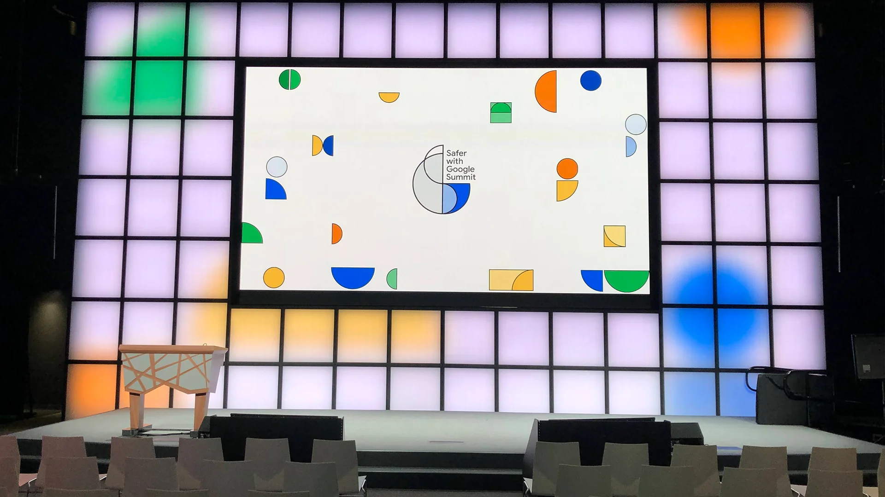
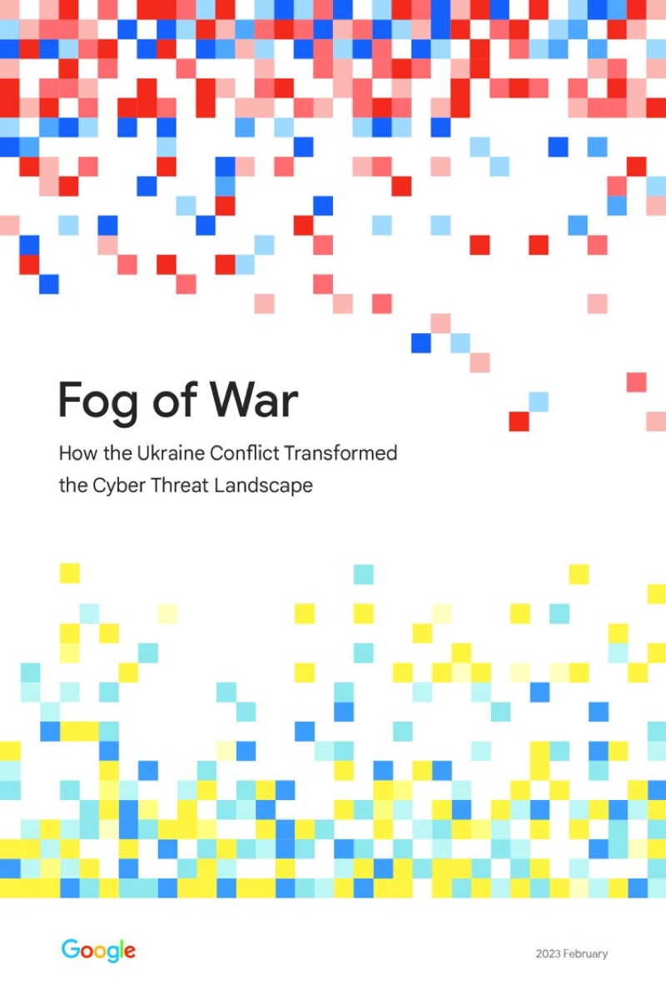
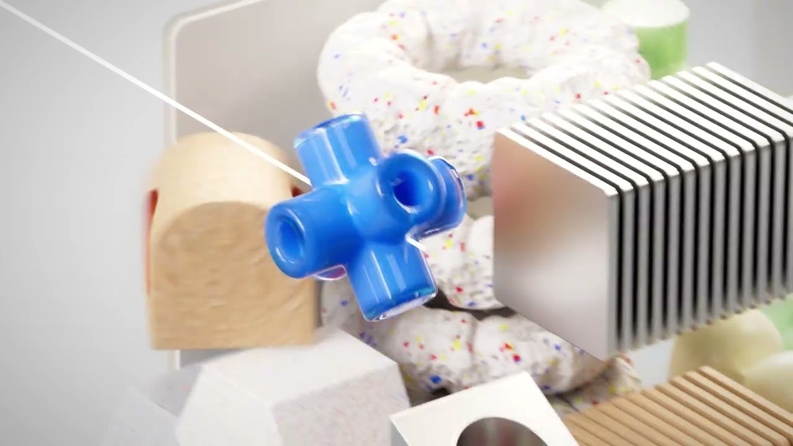
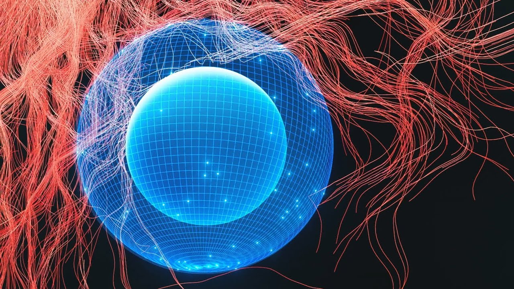
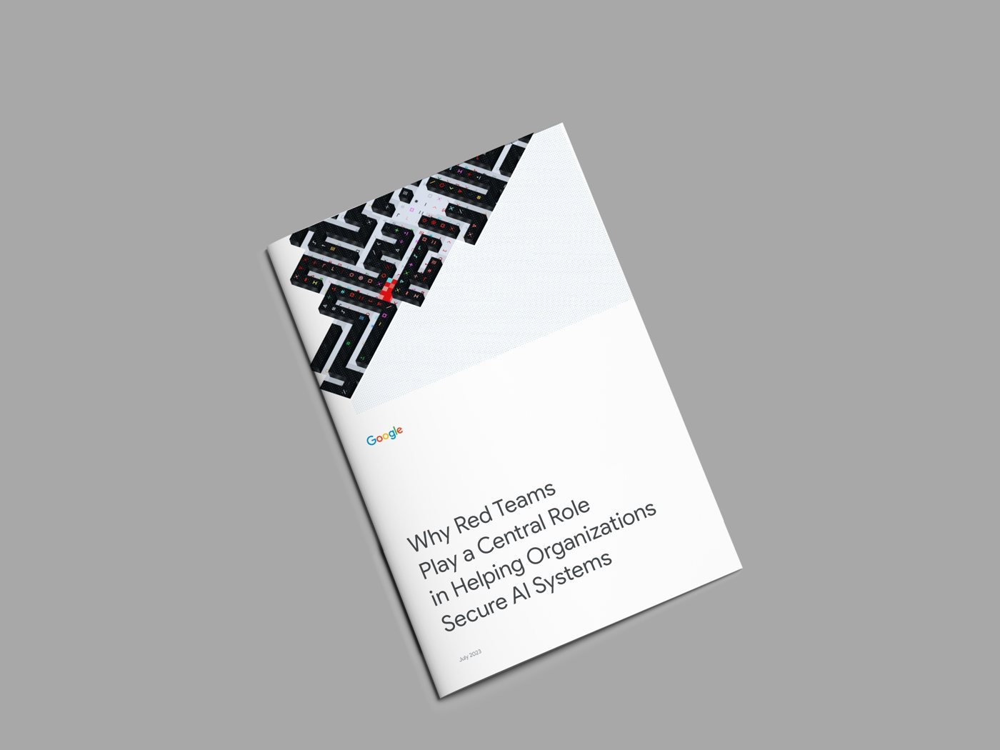

← All Work
Retail & Brand Experience
Warby Parker
WP
About
Placeholder — case study details for Warby Parker go here. Tell me what you’d like included (the brief, the work, outcomes) and I’ll fill this in.
Role — Placeholder — role & scope to be added
More Work

Safer with Google Summit Brand Strategy · Event Design
Security Analysis & Reporting Editorial & Content Design
Safety Anthem Film Brand Film · Creative Direction
AI Safety Film Brand Film · Creative Direction
Secure AI Framework (SAIF) Risk Map Systems & Information Design IBM IBM Brand & Communication Design A Anthropologie Retail & Brand Design H Hollister Retail & Brand Design